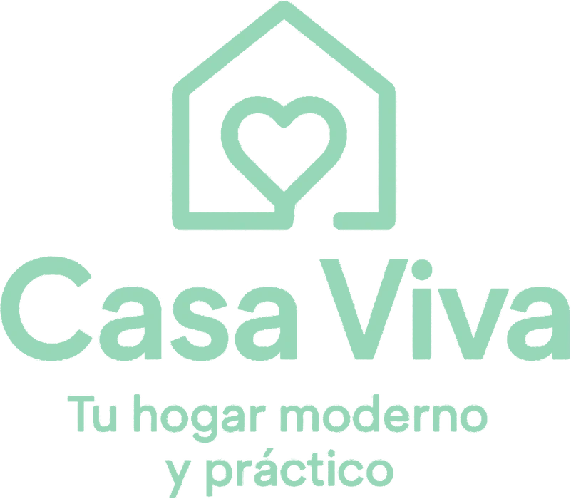
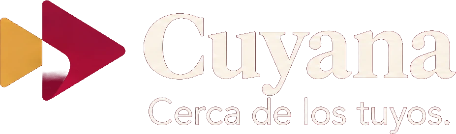
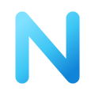

Sin ti, no vende.
Tu negocio funciona porque tú estás encima. Todo el tiempo.
- Contestas el mismo precio once veces al día.
- Anotas los pedidos en una libreta que solo entiendes tú.
- Un mensaje a las once de la noche. Si no respondes, compra en otro lado.
- El domingo cuadras cuentas en vez de descansar.
- Y lo que no haces tú, no se hace.
Un sistema no se cansa.
No es una
promesa.

No es una
idea.

No es un
ejemplo.

No es una
demo.

Cuatro negocios que ya trabajan así. Puedes preguntarles.
¿Se adapta a ti?
Starter
$250 de instalación$125 al mes, más 10%
Catálogo con carrito y WhatsApp automatizado las 24 horas. Para quien arranca a vender online.
Growth
$500 de instalación$150 al mes, más 8%
Todo lo de Starter, más control de entregas y cuadre de pedidos sin cuentas a mano.
Full
$900 de instalación$250 al mes, más 6%
Todo lo de Growth, más agentes con inteligencia artificial y aplicaciones a medida.
¿Tu caso no encaja en ninguno? Escríbenos y armamos algo a medida.
Cuéntanos qué vendes y qué te está costando más.
Te respondemos por WhatsApp. Sin formularios, sin reuniones de una hora.

NEXO · automatizacion.nexocuba.com · +53 5 405 6173